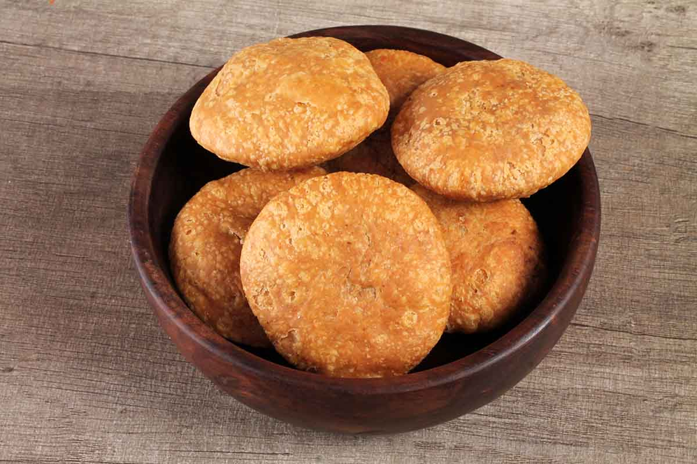

Kachori

Description
The kachori is believed to have originated from the Marwar region of Rajasthan, India.[9] The use of mild spices like coriander and fennel in the kachori's preparation is thought to be a reflection of the region's climatic conditions, making it well-suited for the dry and hot environment.Over time, the kachori gained popularity as a convenient travel snack, a quick and wholesome start to the day for hungry businessmen and workers alike.
ingredients
- 2 Cups refined flour
- 1/4 cup ghee
- to taste salt
- cold water (to mix)
- for deep-frying oil
- 3/4 cup black gram (husked), soaked
- 2 tbsp oil
- 1 tsp cumin seeds
- 1/8 tsp asafoetida (hing)
- 3/4 tsp garam masala
- 3/4 tsp chilli powder
- 2 tbsp fennel seeds, powdered
- 2 tsp coriander powder
- to taste salt
- 1 1/2 tsp mango powder
Steps
- Mix in the flour and salt.
- Add the ghee to the flour
- Make it into a crumbly mixture with the tips of your fingers.
- Add enough water, to make it into a stiffish dough (it should not yield easily when a finger is pressed into it). Cover and leave to rest for at least 15-20 minutes.
- Make marble-sized balls of the lentil mixture (called pithee) wetting your hands as and when necessary to prevent the mixture from sticking to them. Cover with a cloth till ready to fill.
- Make about 20 smooth balls from the dough. Roll them out till 1/4 " thick (about 5 cms/ 2 in diameter).
- Take one piece of rolled dough and pinch the edge all around, leaving the center thicker.
- Dampen the pressed edges, place a ball of filling in the center and bring wet edges together, covering the filling completely. Press together to seal.
- Place this piece in your palm and with the heal of the other palm, press gently in the center. Flatten a bit with palm first then roll it lightly in a round.
- The kachauris are now ready to be fried. Heat the oil in a kadahi.
- When a piece of dough dropped in oil comes up at once, put in as many kachauris that can fit in; turn over immediately and lower heat to medium.
- Fry them till they all turn an even golden in color; reducing the heat from medium to low.
- Takes about 10 minutes for one side and 7-8 minutes on the other. Remove from oil, drain and place on absorbent paper. Serve hot.